UTM 받기와 5.0.8에서 바뀐 점
지난 영상에서 발표자는 macOS 위에 가상화로 윈도우를 깔고 증권사 HTS(Home Trading System)까지 돌려 봤어요. 이번 영상은 그 확장판이에요. 새 버전 UTM으로 더 쾌적하게 쓰는 법, 그리고 그 위에서 오버워치까지 돌리는 과정을 다뤄요.
UTM은 구글에서 검색해 공식 사이트에서 받아요. 아래 화면의 파란 'Download for Mac' 버튼이 무료 다운로드예요. 옆의 'Mac App Store' 버튼도 같은 앱인데, 발표자는 이쪽은 개발자를 후원하는 구입이라고 설명해요.
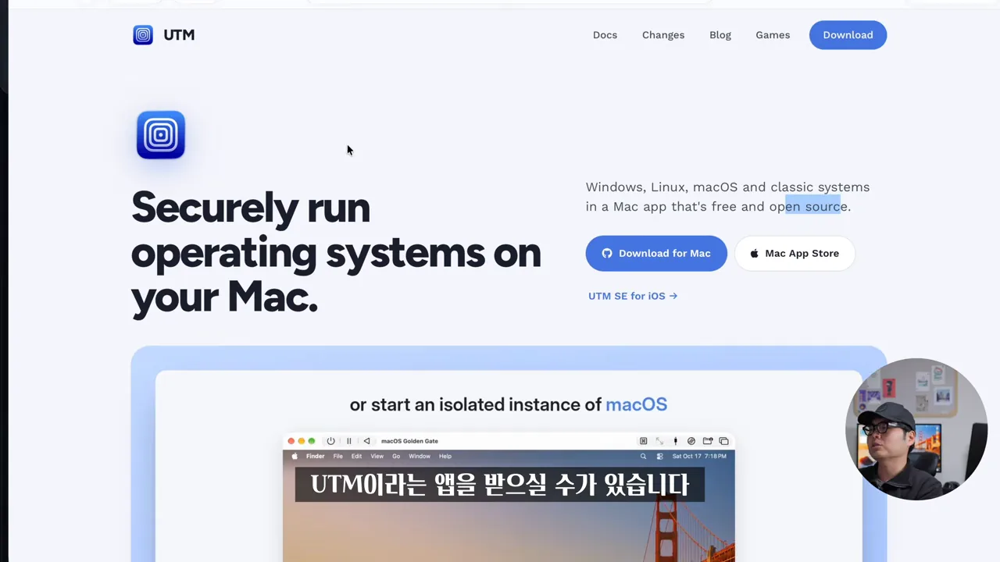
5.0.8에서 바뀐 것
발표자가 꼽은 핵심 변화는 5.0.8부터 윈도우에서 DirectX를 지원한다는 점이에요. 아래 '새로운 기능' 창 맨 위 항목이 'DirectX graphics support for Windows'예요. 드라이버가 아직 실험 단계이고 게임 호환성이 제한적이라는 단서도 붙어 있어요. 같은 창 아래쪽 'Smoother displays' 항목이 120Hz 프로모션 디스플레이 이야기예요.
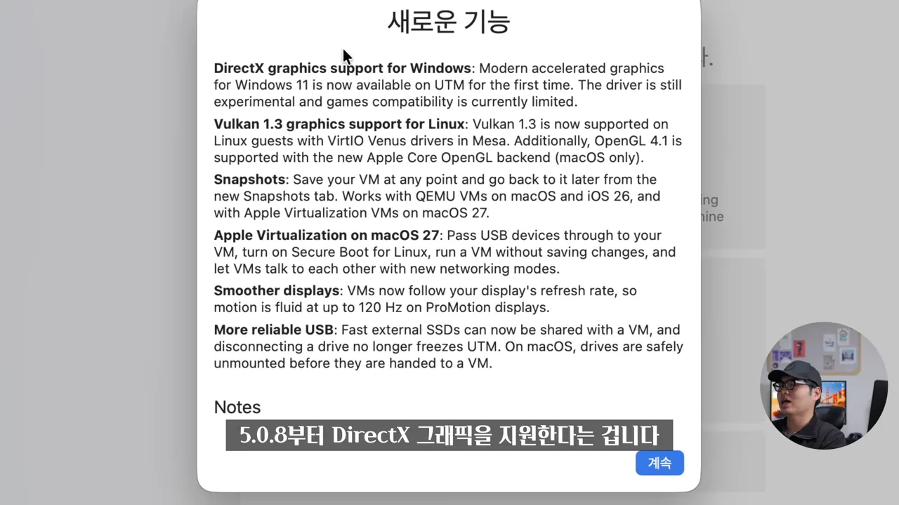
영상은 이 변화를 그림 한 장으로 정리해요. 예전엔 윈도우 게임의 그래픽을 CPU(Central Processing Unit)가 소프트웨어로 계산했어요. 이제는 새 3D 가속 그래픽 드라이버가 DirectX 12 호출을 GPU(Graphics Processing Unit)로 넘겨서, 게임도 가능해졌다는 뜻이에요.
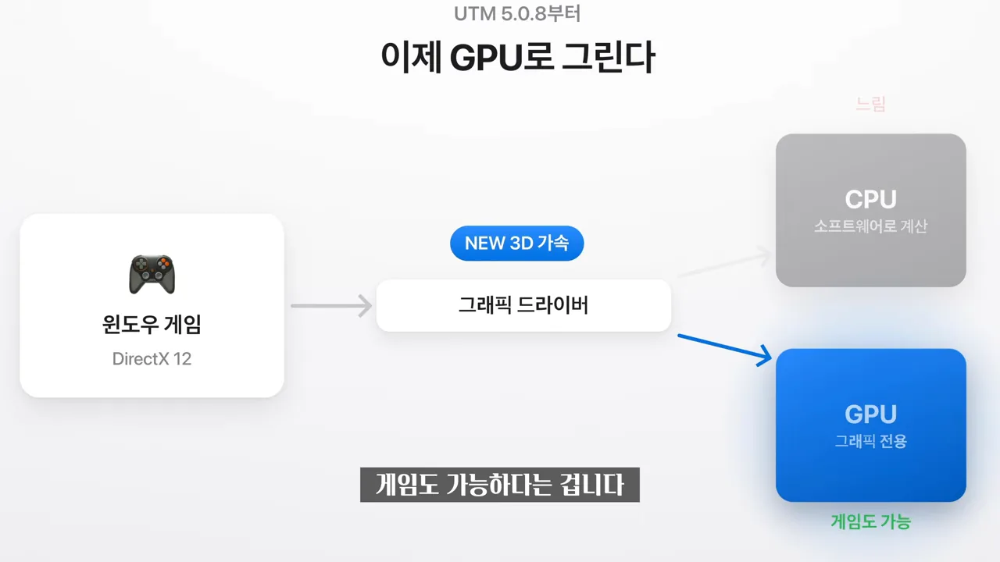
무료인데도 3D 가속이 된다는 게 다른 가상화 솔루션과 비교한 강점이에요. 발표자는 최신 5.0.9로 진행했어요. 예전 버전에서 윈도우를 깔아 쓰던 사람도 그래픽 드라이버가 바뀌었으니, 가능하면 가상 머신을 새로 만드는 게 좋다고 해요.
가상 머신 만들고 윈도우 설치하기
UTM에서 '새 가상 머신 생성'을 누르고 가상화 → Windows를 고르면 하드웨어 설정부터 시작해요. 아래는 영상 순서대로 정리한 설치 단계예요.
- 메모리를 정해요 — 최소는 4GB예요. 사양이 넉넉하면 가상화에 더 주는 게 좋아요. 발표자는 16GB를 줬어요.
- 윈도우 정식 ISO를 받아요 — 앱스토어의 무료 앱 CrystalFetch ISO Downloader로 윈도우 11, 애플 실리콘용, 한국어 버전을 받아요. ISO 파일이 하나 생겨요
- UTM으로 돌아가 '부팅 ISO 이미지'에서 그 파일을 골라요
- 디스크 용량을 정해요 — 기본 64GB예요. 발표자는 128GB로 잡았어요.
- 공유 디렉터리를 정해요 — 맥과 윈도우가 같이 쓰는 폴더예요.
- 저장하고 시작해요 — 'Press any key'가 나오면 바로 아무 키나 눌러요. 윈도우 셋업 화면이 떠요
- 셋업을 진행해요 — 제품 키 없음 → 에디션 선택 → 동의 → 128GB 디스크 선택 → 다음.
- 재부팅 때 또 나오는 'Press any key'는 누르지 않아요 — 가만히 기다려요.
- 국가, 계정 이름, 암호를 넣어요 윈도우 바탕화면이 나와요
메모리와 윈도우 이미지
하드웨어 화면의 메모리 슬라이더는 처음에 4096MB에 있어요. 이게 최소 4GB예요. 발표자는 여기서 16GB로 올렸어요.
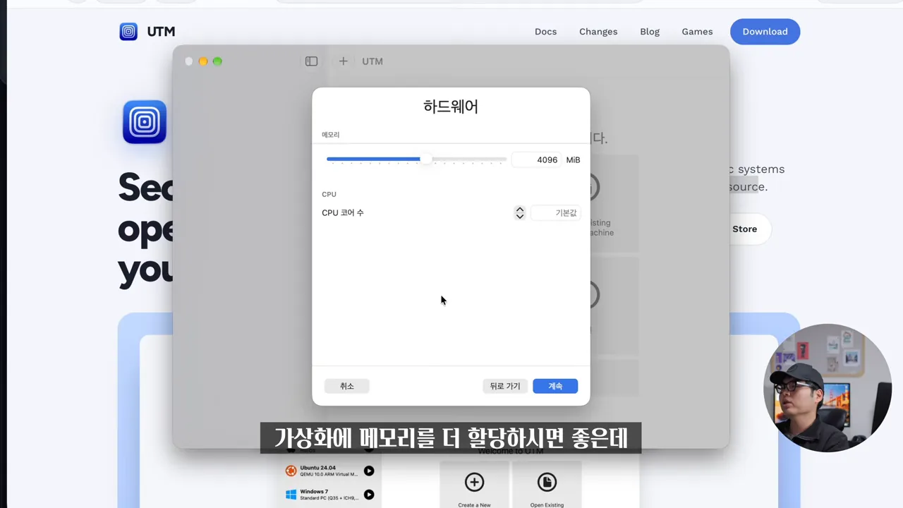
윈도우 이미지는 앱스토어에서 'CrystalFetch ISO Downloader'를 받아 만들어요. 아래 화면 위쪽 '새로운 소식'에는 Windows 빌드를 고를 수 있게 됐다는 업데이트 내용이 보여요.
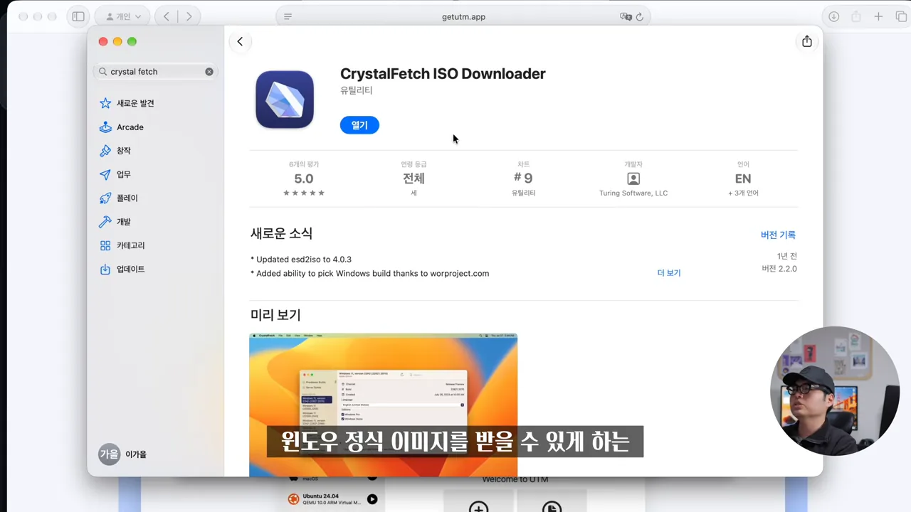
디스크와 공유 폴더
저장소 화면의 기본값은 64GB예요. 발표자는 처음부터 크게 잡으라고 권해요. 나중에 늘리려면 UTM 설정을 바꾸고, 윈도우에 들어가 파티션 관리자에서 한 번 더 늘려야 해서 두 번 손이 가거든요. 게임은 외장 드라이브에 둬도 실행돼요.
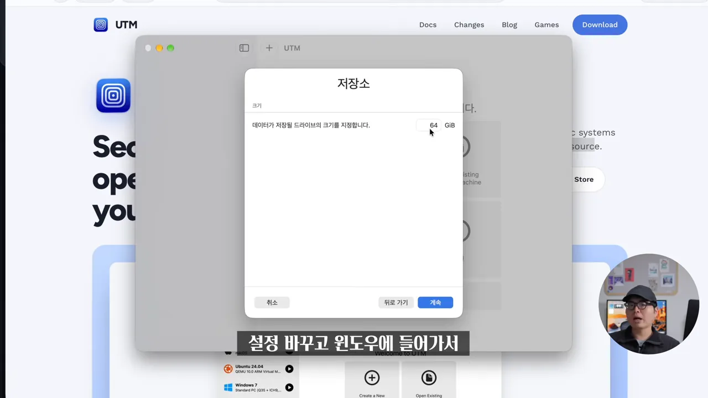
공유 디렉터리는 맥과 윈도우 사이에 파일을 주고받을 폴더예요. 발표자는 '찾아보기'로 데스크톱에 'Share File'이라는 새 폴더를 만들어 지정했어요.
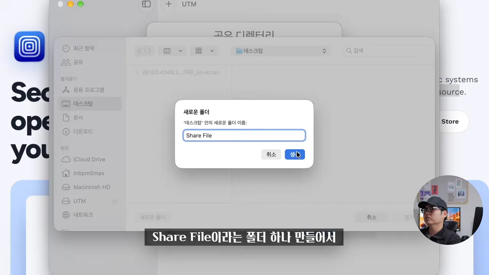
'Press any key'는 두 번 나와요
설치가 안 넘어간다는 질문이 많아서 발표자가 이 부분을 자세히 설명해요. 처음 시작하면 검은 화면에 'Press any key to boot from CD or DVD...'가 떠요. 이때는 바로 엔터 같은 키를 눌러야 셋업으로 들어가요.
설치가 진행되다 재부팅하면 같은 문구가 또 떠요. 이번엔 누르지 않고 기다려야 해요. 가상 설치 디스크가 아직 들어 있는 상태라, 누르면 셋업이 처음부터 다시 시작되거든요.
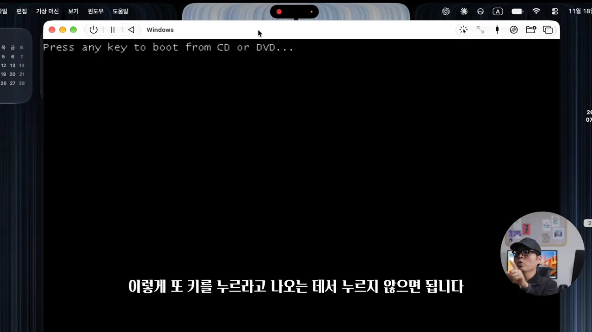
기다리면 국가 선택부터 시작하는 윈도우 기본 설정이 나와요. 계정 이름을 넣을 때 한/영 전환은 옵션 키로 한다고 말해요. 암호까지 넣으면 바탕화면이 떠요.
게스트 툴과 3D 가속 드라이버
막 설치한 윈도우는 필요한 드라이버가 없어서 화면이 뻣뻣하고 해상도도 아주 낮아요. Guest Tools 설치 안내가 자동으로 뜨기도 해요. 안 뜨면 탐색기에서 '내 PC'를 열어요. 아래처럼 'CD 드라이브 (D:) UTM Guest Tools'라는 가상 드라이브가 보여요.
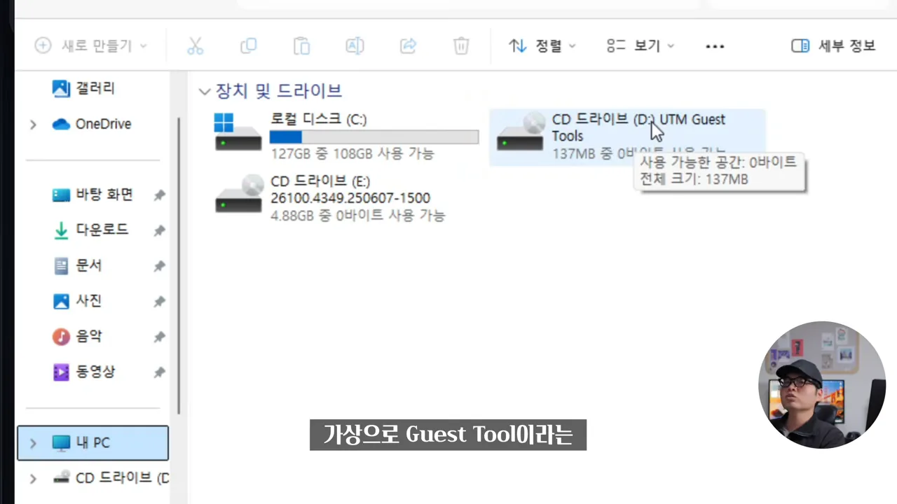
3D 가속 체크박스가 핵심이에요
설치 중간에 'Graphics Acceleration' 화면이 나와요. 맨 아래 'Enable experimental 3D acceleration' 체크박스가 이번 버전의 핵심이에요. 위의 안내문은 실험 중인 드라이버라 렌더링 글리치, 앱 충돌, 빈 화면이 생길 수 있다고 경고해요.
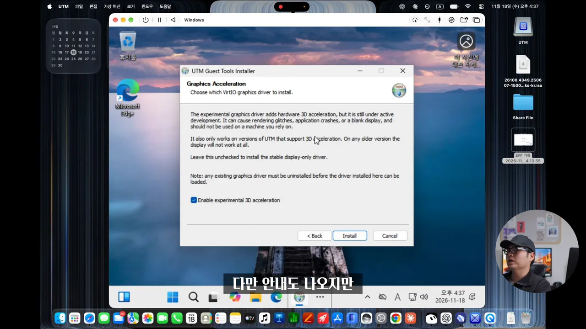
| 체크박스 | 깔리는 드라이버 | 이럴 때 |
|---|---|---|
| 체크 | 3D 가속이 되는 새 실험용 드라이버 | 게임까지 하고 싶을 때. 충돌이나 글리치가 생길 수 있어요 |
| 해제 | 안정적인 예전 화면 전용 드라이버 | HTS나 사무용 앱만 쓸 때 |
발표자는 체크하고 설치했어요. 설치가 끝나면 화면이 눈에 띄게 깔끔해져요.
해상도, 배율, 120Hz
창을 전체 화면으로 키우고, 바탕화면 우클릭 → 디스플레이 설정에서 해상도를 골라요. 맥북 화면에 딱 맞는 값은 없어서 무난한 1920×1200을 골랐어요. 아래 화면은 해상도를 바꾼 직후 '이 디스플레이 설정을 유지할까요?'를 묻는 창이에요.
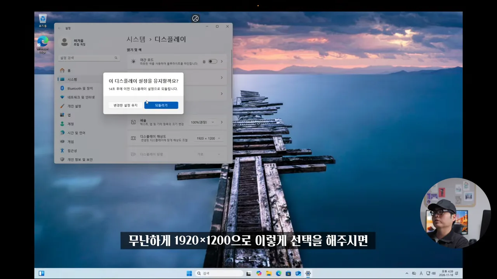
글씨가 작으면 배율을 150% 정도로 올려요. 고급 디스플레이에서 새로 고침 빈도를 보면 120Hz가 잡혀요. 가상 윈도우인데도 꽤 쾌적하다는 게 발표자의 평가예요.
ARM 윈도우를 쓸 때 알아둘 것
UTM이 돌리는 건 ARM(Advanced RISC Machines) 버전 윈도우예요. 애플 실리콘도 ARM이라서 생각보다 훨씬 쾌적하게 돌아가요. 인텔·AMD(Advanced Micro Devices)용으로 만든 x86·x64 윈도우 앱은 윈도우에 들어 있는 번역 레이어 프리즘을 거쳐 실행돼요.
안티치트 게임은 아직이에요
부정행위 방지 프로그램이 들어간 게임은 아직 ARM 윈도우에서 돌아가지 않아요. 발표자가 띄운 기사에는 라이엇이 롤과 발로란트를 ARM 윈도우에서도 지원하겠다고 밝혔다는 내용이 있어요. 노란 형광펜 부분이 '뱅가드처럼 컴퓨터 깊숙한 단계에서 작동하는 안티치트가 게임 실행 자체를 막았다'는 문장이에요.
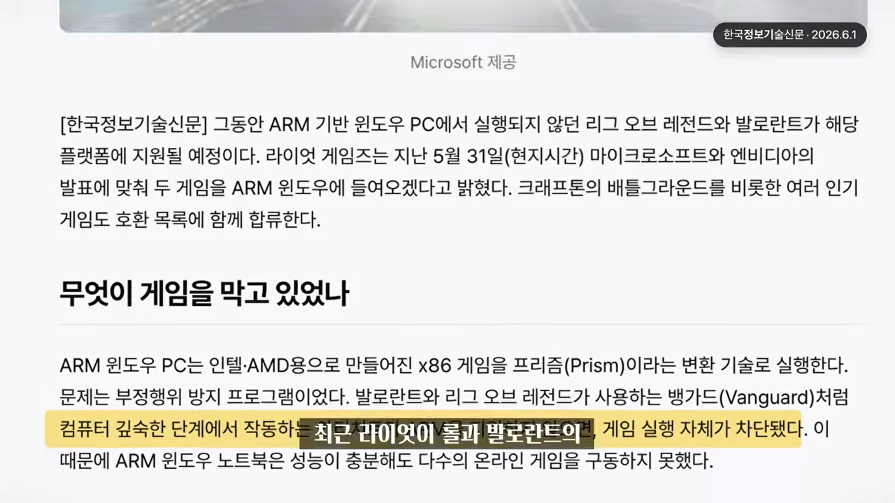
마우스가 뻣뻣하면 입력 장치 캡처
가상 윈도우에서 웹사이트를 열어 보면 마우스가 묘하게 뻣뻣해요. 기본 상태에선 마우스가 맥과 가상 윈도우 창을 오가기 때문이에요. UTM 창 오른쪽 위 툴바의 '입력 장치 캡처'를 누르면 마우스가 가상 윈도우 안에 갇혀서 그 안에서만 움직여요. Control + Option을 함께 눌러도 돼요.
아래는 캡처를 켰을 때 뜨는 안내예요. '마우스 커서를 해제하려면 Control+Option 키 조합을 동시에 누르라'고 적혀 있어요.
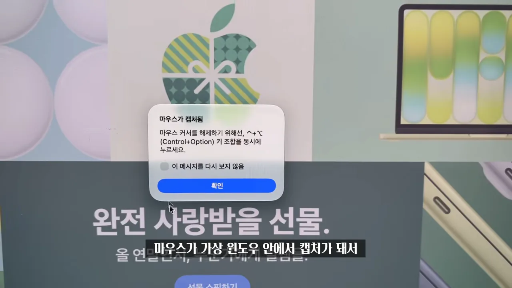
이 상태로 HTS를 깔아 보니 보안 프로그램까지 정상으로 떴어요. 맥과 격리된 공간에서 윈도우를 120Hz로 쓰는 셈이에요. 트랙패드를 옆으로 밀면 맥 화면으로 돌아오고, 터치가 되는 맥북이라면 화면을 밀어서도 오갈 수 있다고 해요.
DirectX 12가 되려면 로제타가 필요해요
3D 가속 드라이버가 제대로 깔렸는지는 윈도우의 DirectX 진단 도구로 확인해요. 아래 화면의 디스플레이 탭에 영상 앞에서 정한 설정이 그대로 보여요.
- 왼쪽 장치 이름이 'Red Hat VirtIO GPU 3D controller'예요. UTM이 만든 가상 GPU예요.
- 현재 디스플레이 모드가 1920×1200(32bit)(120Hz)이에요.
- 오른쪽 Direct3D DDI(Device Driver Interface)가 12, 기능 수준이 12_1부터 시작해요. DX12(DirectX 12)까지 된다는 뜻이에요.
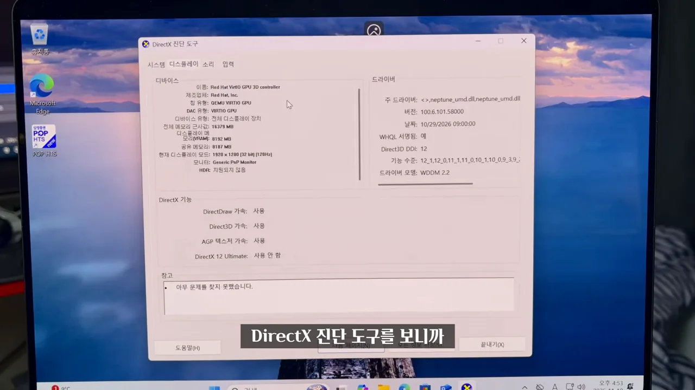
로제타가 왜 필요할까요
여기서 발표자가 강조하는 게 로제타예요. 아래 슬라이드처럼 인텔 맥용(x86) 앱을 애플 실리콘에서 돌리게 해 주는 번역 레이어예요. 윈도우 안이 아니라 맥 쪽에 깔려 있어야 해요.
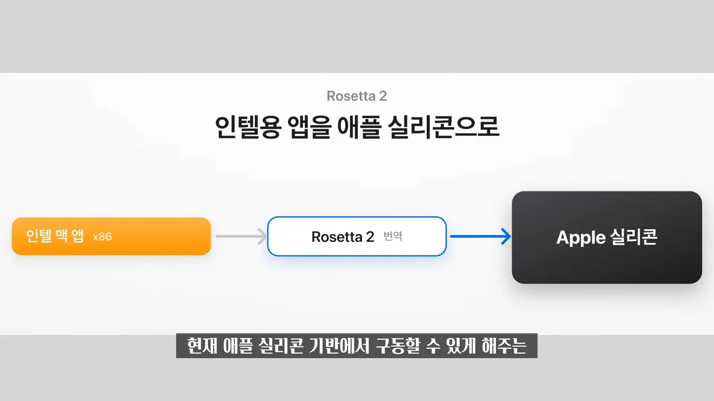
애플은 인텔 앱 지원을 줄여 가지만 게임을 위한 로제타는 남긴다고 했어요. 아래 애플 문서의 노란 '중요' 상자에서 파랗게 칠한 부분이 '인텔 기반 프레임워크에 의존하는 유지 보수되지 않은 오래된 게임을 위해 로제타 기능 일부를 유지한다'는 문장이에요.
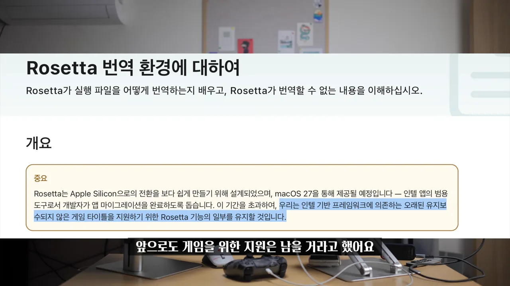
로제타는 인텔 앱을 처음 열 때 설치 안내가 떠요. 직접 깔고 싶으면 애플 공식 지원 페이지의 'Or use Terminal' 방법을 따라요. 오른쪽 3번에 나온 명령을 복사해 맥의 터미널에 붙여 넣고 실행하면 돼요.
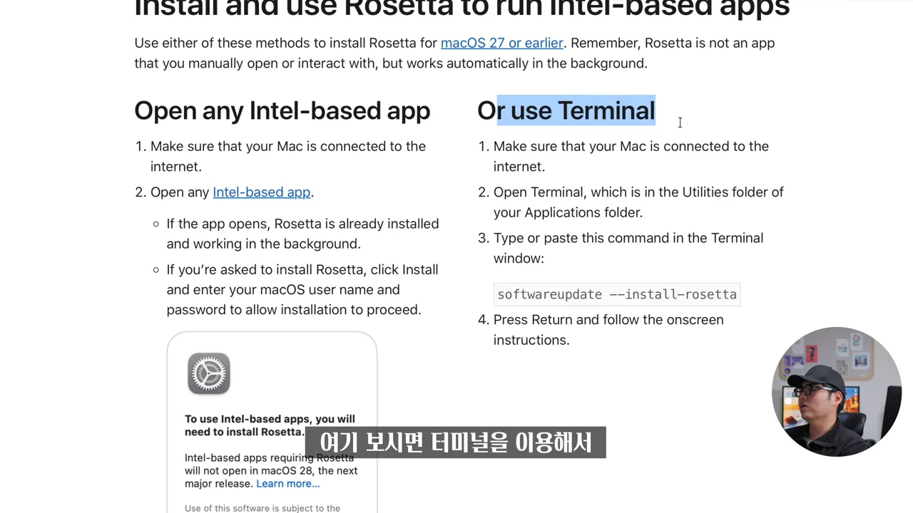
softwareupdate --install-rosettaUTM에서 오버워치 돌려 보기
여기서부터는 게임이에요. 설치 시연은 빌려 쓰는 M5 Max 맥북 프로로 했고, 게임은 발표자가 원래 쓰던 M3 Max 맥북에서 했어요. 스팀 게임은 외장 SSD(Solid State Drive)에 넣어 뒀어요.
외장 SSD를 가상 윈도우에 붙이기
UTM 툴바의 USB(Universal Serial Bus) 메뉴에서 외장 SSD를 가상 머신에 연결해요. 아래 화면에서 'Extreme 55SD' 항목 옆 하위 메뉴의 'Auto connect on start'를 켜 두면, 가상 머신을 시작할 때마다 자동으로 붙어요.
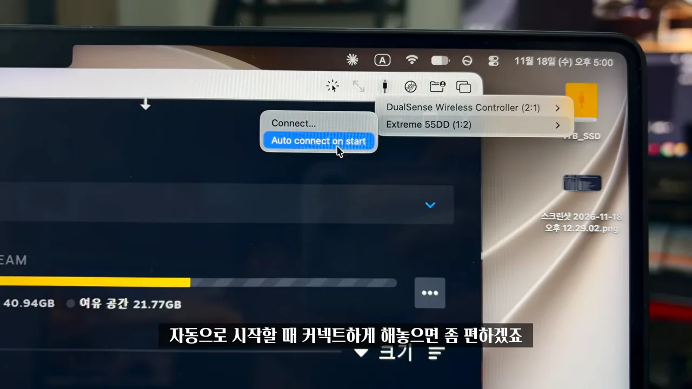
오버워치 그래픽 설정
스팀판 오버워치가 그대로 실행됐어요. 아래 설정 화면 맨 위 GPU 이름이 'RED HAT VIRTIO GPU 3D CONTROLLER'예요. 가상 GPU 위에서 돌고 있다는 표시예요. 그래픽 API(Application Programming Interface) 칸은 'DIRECTX 11'이에요.
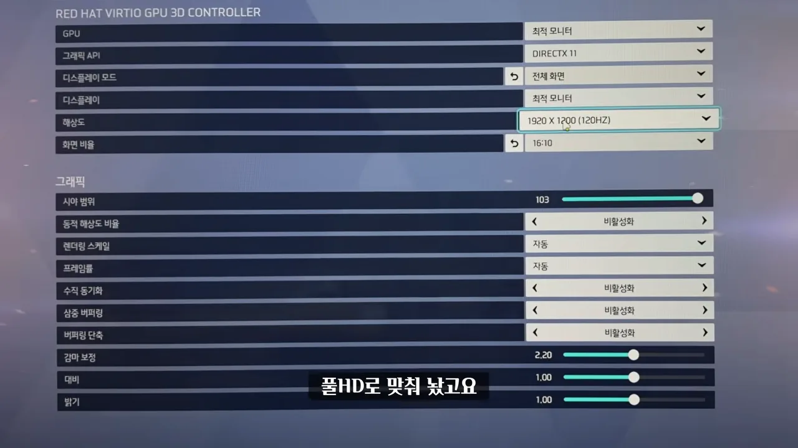
발표자가 말한 나머지 설정은 렌더링 해상도 100%, 최대 300프레임, 그래픽 품질 중간이에요. 프레임을 낮추는 장치 없이 그대로 두고 잰 셈이에요.
실제로 나온 프레임
발표자가 플레이하며 읽어 준 숫자를 상황별로 묶었어요. 복잡한 전투에서 36프레임까지 떨어지는 장면이 아래 화면이에요.
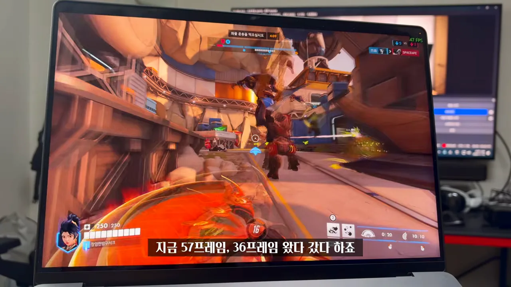
| 상황 | 발표자가 읽은 프레임 |
|---|---|
| 대기실 | 58 |
| 매칭 대기 | 98 |
| 게임 시작 직후 | 85 · 93 · 70 · 105 · 102 |
| 복잡한 전투 | 57 · 36 |
| 캐싱이 끝난 뒤 | 85 · 65 · 86 · 79, 대기 중 92 |
| 막판 전투 | 45 · 48 · 50 |
왜 중간중간 끊길까요
발표자는 프레임이 뚝 떨어지는 순간을 셰이더 컴파일 탓으로 봐요. 그래픽 표현을 계산하는 셰이더를 처음 만날 때마다 컴파일해서 캐시로 만들어야 하거든요. 그래서 처음 할 땐 버벅이고, 할수록 점점 부드러워져요. 새 이펙트가 나오면 그때 또 잠깐 끊겨요. 실제로 한 번 껐다 다시 켜니 확실히 부드러워졌다고 해요.
결국 이 판은 이겼어요. 발표자는 막 나온 초기 드라이버로 이 정도면 앞으로 좋아질 여지가 많다고 봐요.
더 빠른 길, 시카루기르와 게임 포팅 툴킷
발표자는 UTM 결과가 끝이 아니라고 해요. 드라이버가 초기 단계라 나아질 여지가 많고, 지금도 특정 레이어만 번역하는 방식이 더 잘 돌아간다는 거예요. 아래 슬라이드가 두 방식의 차이를 한 장에 보여 줘요.
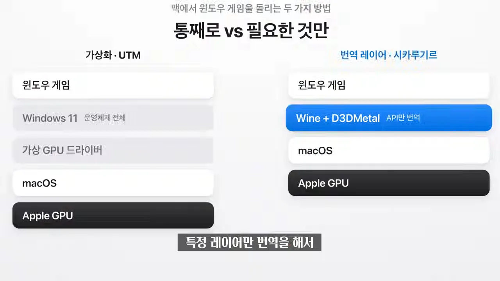
시카루기르 래퍼 새로 만들기
시카루기르는 지난 영상에서 설치법을 다룬 맥용 윈도우 게임 래퍼예요. 그 사이 템플릿과 엔진이 올라갔어요. 아래 엔진 선택 목록 맨 위가 'WS12WineSikarugir11.0_1'이에요. 이 11 버전 엔진으로 스팀 래퍼를 새로 만들라고 해요. 스팀을 래퍼로 감싸 호환 레이어에 연결하는 구조예요.
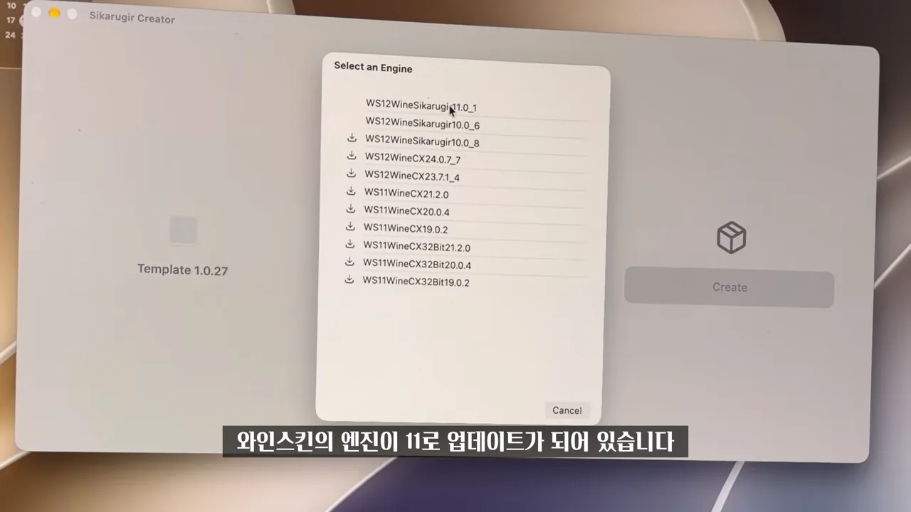
성능이 오른 이유는 애플의 게임 포팅 툴킷이에요. 윈도우 게임을 맥에서 쉽게 돌리도록 애플이 내놓은 도구인데, 벌써 4.0까지 나왔어요. 래퍼 설정 창에서 'Direct3D to Metal translation layer (D3DMetal)'에 체크돼 있으면 이 툴킷을 쓰는 거예요.
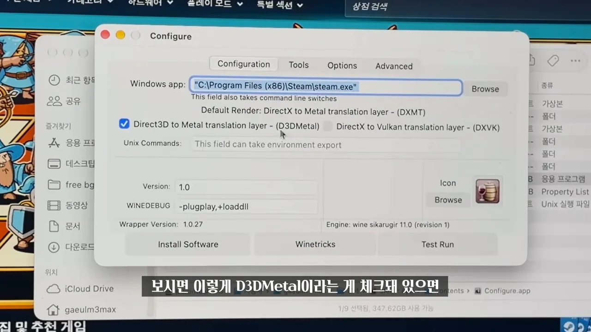
'매우 높음'에서도 90프레임
설정은 아까와 같아요. 1920×1200, 16:10, 해상도 100%, 최대 300프레임이에요. 다른 건 그래픽 품질을 '중간'에서 '매우 높음'으로 올린 것 하나예요. 아래 화면 오른쪽 위 성능 표시에 M3 Max, D3D11(Direct3D 11), 1920x1200, FPS(Frames Per Second) 116.06, 'Game Porting Toolkit 4.0b3'가 찍혀 있어요.
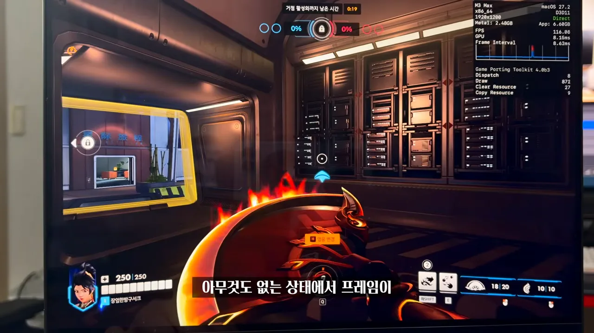
두 방식에서 발표자가 읽어 준 프레임을 한 그림에 찍었어요. 점 하나가 읽어 준 숫자 하나예요. 그래픽 품질이 다르다는 점을 같이 봐야 해요.
발표자는 이 방식도 처음엔 셰이더 캐시를 만드느라 계속 버벅인다고 해요. 열 판쯤 해야 부드러워진다고 하고, 이 판은 졌어요.
끝났는데 실행 중으로 남는 버그
와인 계열의 버그가 하나 있어요. 게임을 다 끝냈는데도 스팀이 실행 중으로 나오고, 정지를 눌러도 안 먹어요. 그럴 땐 맥 메뉴 막대의 Wine 메뉴에서 'Wine 끝내기'로 창을 닫아요. 그다음 터미널에서 명령어로 와인 관련 프로세스를 한 번에 정리해요. 그러면 다음에도 윈도우 스팀을 문제없이 다시 불러올 수 있어요.
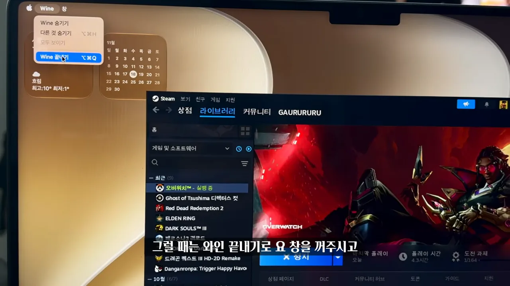
영상 화면에는 터미널에 친 명령어가 나오지 않아요. 챕터 제목에 'pkill'이 적혀 있어서, 와인 프로세스를 이름으로 골라 끄는 방식으로 짐작할 수 있는 정도예요.
D3DMetal과 DXMT, 그리고 무엇을 고를까
래퍼 설정에서 D3DMetal 체크를 풀면 DXMT라는 다른 번역 레이어를 써요.
| 번역 레이어 | 지원 범위 (영상 기준) | 언제 쓰나요 |
|---|---|---|
| D3DMetal (게임 포팅 툴킷) | 이번 시연에 쓴 기본 선택 | 먼저 이걸로 돌려 봐요 |
| DXMT | DirectX 11까지만 | D3DMetal로 잘 안 되는 게임에서 시험해 봐요. 게임에 따라 더 잘 되기도 해요 |
정리하면 선택은 취향이에요. 시카루기르 쪽은 성능이 더 좋지만 래퍼를 만들고 설정하느라 손이 더 가요. 이것도 편하게 해 주는 파생 소프트웨어가 많다고 해요. 반대로 귀찮은 건 싫고 성능이 조금 떨어져도 괜찮다면, 이제 UTM만으로도 오버워치를 즐길 수준이 됐다는 게 발표자의 결론이에요.